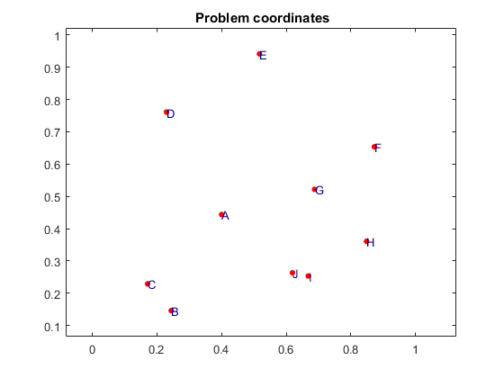
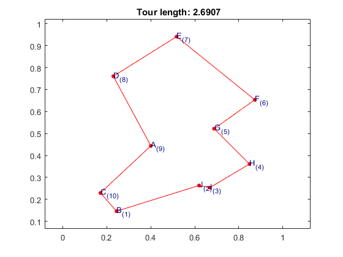

Solving the TSP provided the problem's coordinates using Hopfield Network
The following example shows how to solve any TSP problem, provided the problem coordinates
Contents
Network parameters
rng(22); % For reproducibility
Free parameter C:
C = 0.00001;
Creating the tsphopfieldnetwork object
Providing problem coordinates
coords = [0.4000 0.4439;... 0.2439 0.1463;... 0.1707 0.2293;... 0.2293 0.7610;... 0.5171 0.9414;... 0.8732 0.6536;... 0.6878 0.5219;... 0.8488 0.3609;... 0.6683 0.2536;... 0.6195 0.2634];
Providing cities to the network through the structure of options
options = tsphopfieldnet.createOptions('coords',coords);
Number of cities:
N = size(coords,1); net = tsphopfieldnet(N,C,options);
Data coordinates (cities) can be visualized before training takes place:
plot(net);
Warning: Simulation has not taken place yet. Use 'sim(net)' to simulate your network.
Training the network
The default training algorithm is trainty
train(net);
Results of the training phase. Network parameters
getTrainParam(net)
ans =
A: 2.9408
B: 3.0000
C: 1.0000e-05
D: 1
K: 0
N: 10
Np: 300010
dL: 0.0592
dU: 1
dUaux: 0.8407
rho: 0.0592
Simulating the network
The default simulation algorithm is talavan-yanez
sim(net);
Visualizing results
getResults(net) plot(net);
ans =
compTime: 0.0347
energy: [1x93 double]
exitFlag: 1
itersReached: 93
time: [1x93 double]
tourLength: 2.6907
validPath: 1
visitOrder: [2 10 9 8 7 6 5 4 1 3]
